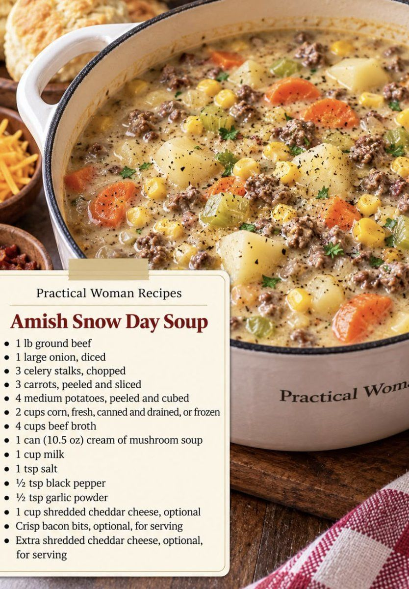

Amish Snow Day Soup

- Meal
- Dinner
- Serves
- 6
- Protein
- ground beef
- Cook
- stovetop, one pot · 20 min active / 45 min total · easy
- Make-ahead / leftovers
- yes / yes
- Mediterranean
- no
- WW tier
- heavy
- Status
- Trying out (probation)
Creamy one-pot beef and vegetable soup with potatoes, corn, and cream of mushroom soup. Not Cajun Potato Soup (smoked sausage, heavy cream, Cajun heat) and not Chili (beans and tomato).
Ingredients
- 1 lb ground beef
- 1 large onion, diced
- 3 celery stalks, chopped
- 3 carrots, peeled and sliced
- 4 medium potatoes, peeled and cubed
- 2 cups corn (fresh, canned and drained, or frozen)
- 4 cups beef broth
- 1 can (10.5 oz) cream of mushroom soup
- 1 cup milk
- 1 tsp salt
- 1/2 tsp black pepper
- 1/2 tsp garlic powder
- 1 cup shredded cheddar (optional)
- Crisp bacon bits, for serving (optional)
- Extra shredded cheddar, for serving (optional)
Method
Kitchen's method, not the source's. The source card lists ingredients only, so this one-pot method was written by Kitchen.
- In a large pot over medium-high heat, brown the ground beef with the onion, breaking it up, until the beef is no longer pink and the onion is soft (8–10 min). Drain the fat.
- Add the celery, carrots, potatoes, corn, beef broth, cream of mushroom soup, milk, salt, pepper and garlic powder. Stir until the condensed soup is blended in.
- Bring just to a boil, then lower the heat and simmer, partly covered, stirring now and then, until the potatoes and carrots are tender (20–25 min). Keep it at a gentle simmer so the milk doesn't scorch.
- If using, stir in the 1 cup cheddar off the heat until melted. Taste and adjust the salt.
- Serve topped with bacon bits and more cheddar.
Notes
- Servings: the source gives no serving count. The amounts make about 11–12 cups (1 lb beef, 4 potatoes, 4 cups broth plus vegetables and milk), which is about 6 bowls of 1¾–2 cups. That feeds the household of 6, so the amounts are not scaled. Serve with bread or a side salad if it needs stretching.
- a fish-free plate / hidden fish: no fish in the recipe. Cream of mushroom soup (Campbell's and most store brands) and beef broth normally contain no Worcestershire or anchovy. Some beef broths and bases (bouillon/"better than" pastes) do add Worcestershire or anchovy, so check both labels at the store. If a broth lists Worcestershire, pick another brand.
- Red meat: ground beef as the main counts toward the ≤2 red/processed-meat cap. Bacon bits are optional garnish only; leave them off if the week is already at the cap with processed meat.
- WW tier heavy: red-meat-centric plus condensed cream soup and cheese. Lighter swaps (not the default): 93% lean beef or ground turkey, reduced-fat cream of mushroom, skip the stirred-in cheddar.
- Mediterranean ✗: butter/cream-soup base, red meat (vegetables and potatoes alone are 2 of 4).
- Nutrition: not given by the source; none listed here.
- Pantry staples and Aldi/Sam's cover all of it. Freezes OK without the cheese stirred in.
Source: Practical Woman Recipes, via X: https://x.com/nakemler/status/2118102735631634707